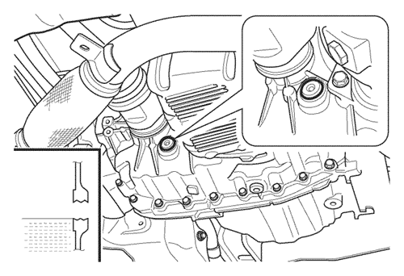
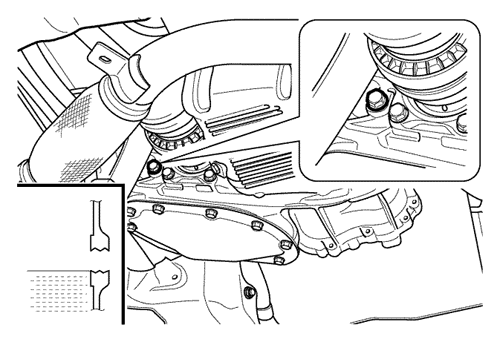
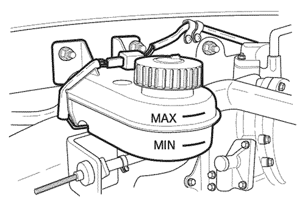
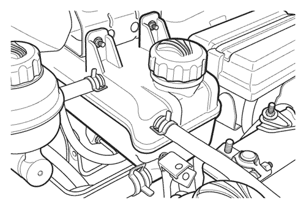
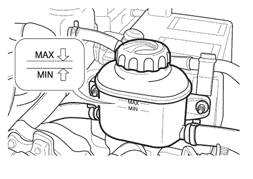
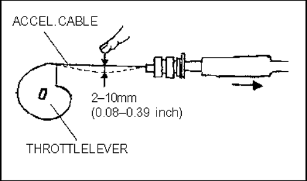

SECCIÓN 2
COMPARTIMENTO DEL MOTOR
1.CONEXIÓN SUELTA DE COMPONENTES
Compruebe si hay componentes sueltos, mangueras de vacío o conexiones eléctricas dobladas o perforadas o cualquier otro componente ausente o desconectado en el compartimento del motor (ver más abajo).



- Filtro de aire
- Tapa del filtro de aceite de motor
- Depósito de líquido de frenos*
- Depósito de líquido de embrague*
- Depósito de refrigerante
- Caja de fusibles y relés
- Batería
- Depósito de líquido del dispositivo de lavado
- Depósito del líquido de servodirección
- Varilla de nivel de aceite de motor
* Kalos/Aveo, Nubira/Lacetti y Evanda están equipados con un depósito combinado para el líquido de frenos y de embrague.
- Compruebe si hay componentes ausentes o desconectados en el motor.
- Compruebe si hay conexiones eléctricas sueltas o mal conectadas.
- Compruebe si las mangueras de vacío están dobladas, perforadas, dañadas, retorcidas o hinchadas.
- Compruebe si las abrazaderas de manguera o las conexiones de tubo de los siguientes sistemas presentan fugas o están sueltas.
- - Sistema de combustible
- Sistema de refrigeración
- - Sistema de servodirección
- Sistema de aire acondicionado
- Compruebe si los componentes del motor están sueltos.
En caso de precisarse un remedio, apriete las abrazaderas, conexiones, pernos y tuercas; sustituya o repare la manguera defectuosa y sus conexiones.
2. TRAZADO DE MANGUERAS Y CABLES ELÉCTRICOS
Verifique que las siguientes mangueras y cables eléctricos estén correctamente trazados, con una separación suficiente respecto a las piezas adyacentes móviles o calientes.
- Manguera de combustible
- Manguera de aire acondicionado
- Mangueras de vacío
- Cable de alta tensión del sistema de encendido
- Cables eléctricos
3. LIBERTAD DE MOVIMIENTOS DE ARTICULACIÓN, VÁLVULAS Y OTROS COMPONENTES
Compruebe el movimiento o libertad de movimiento de la articulación, válvulas y demás componentes.
- Cable de acelerador
- Compruebe de la manera siguiente el juego libre del cable del acelerador con el motor en caliente.
- 1) Tire del cable del acelerador hacia la palanca de la mariposa.
- 2) Aparte el cable de la palanca de la mariposa hasta que la palanca comience a moverse (juego libre).
- En caso de precisar un ajuste, consulte "9. Articulación de mariposa" en esta misma sección.
- Pedal de embrague
- Compruebe el juego libre del pedal de embrague al pisarlo.
- Sistema de articulación de dirección
- El mejor método para comprobar el estado de éste es con el vehículo situado sobre una superficie plana y con un equipo de dos mecánicos.
- Uno de los mecánicos se encargará de girar el volante primero en una dirección y luego en la otra, comprobando su funcionamiento y estado, así como la instalación de la columna de dirección (con o sin sistema de dirección asistida), mientras el otro mecánico verifica el juego de los siguientes puntos:
- Tirantes (no deben estar sueltos)
- Instalación del engranaje de dirección en el chasis
- Juntas universales del árbol de dirección desde el engranaje de dirección hacia arriba (no deben estar sueltas)
- Compruebe que todas las abrazaderas estén correctamente instaladas y apretadas.
- Conjunto del motor de arranque
- 1) Compruebe que estén adecuadamente sujetos el interruptor y los contactos de arranque.
- 2) Ponga en marcha el motor de arranque y compruebe lo siguiente:
- El motor de arranque debe hacer arrancar el motor a una velocidad normal.
- El motor de arranque debe operar sin producir ruidos anormales.
Nota: No haga funcionar el motor de arranque demasiado tiempo dado que genera un gran esfuerzo en la batería.
- Motor iniciando respuesta
- Arranque el motor y compruebe si éste funciona con normalidad.
- Si el motor no arranca o si se detiene de nuevo, compruebe los siguientes elementos. Para más información, consulte el manual de servicio.
- Sistema de encendido
- Operación IAC
- En caso necesario, los sensores y el ECM
4. RUIDOS INUSUALES
Compruebe la posible presencia de ruidos inusuales en el compartimento del motor.
Haga funcionar el motor y compruebe si hay ruidos inusuales. Si se escuchan ruidos inusuales, apriete o fije las partes flojas y ajuste la separación entre los componentes.
5. FILTRACIONES Y FUGAS EN CONEXIONES DE MANGUERAS Y TUBOS, ETC.
Compruebe visualmente si hay filtraciones o fugas en la conexión, cierres, juntas y tapones de las mangueras y tubos. Apriete las abrazaderas y la conexión según sea necesario.
- Sistema de combustible
- Sistema de aire acondicionado
- Sistema de refrigeración
- Sistema de frenado
- Sistema de embrague
- Sistema de servodirección
- Conjunto de motor
- Cubierta de soporte del árbol de levas
- Culata
- Bloque de cilindros
- Cárter de aceite
- Juntas del árbol de levas, etc.
6. SISTEMA DE SERVODIRECCIÓN
Compruebe la posible presencia de fugas y la separación respecto a los paneles adyacentes y a las piezas móviles o calientes del engranaje de servodirección, los conductos y las mangueras.
En caso necesario, apriete las abrazaderas y conectores.

7. PROTECCIÓN DEL REFRIGERANTE DEL MOTOR
Compruebe la protección del refrigerante del motor
- Los ventiladores de refrigeración los acciona el ECM mediante un relé para ventilador de refrigeración de baja velocidad y uno de alta velocidad en modelos sin A/C, o mediante un relé de velocidad alta de conexión en serie/paralelo en modelos con A/C, como se muestra más abajo;
<Ejemplo: TACUMA(REZZO)>
| Descripción | Modo de operación del ventilador de refrigeración | Temperatura operativa del ventilador (°C) |
| ON | OFF |
| A/C OFF o modelo sin A/C | Baja velocidad | 96 | 93 |
| Alta velocidad | 100 | 97 |
| A/C ON | Baja velocidad | cuando el sistema A/C está en ON |
| Alta velocidad | 100 | 97 |
- Compruebe todas las mangueras y conexiones.
- Compruebe las posibles fugas del sistema de refrigeración conforme al siguiente procedimiento.
- - Corrija el nivel de refrigerante y opere el motor en ralentí.
- - Monte el comprobador del radiador en el depósito de expansión en lugar de la tapa de tornillo.
- - Las fugas pueden detectarse si se aprecia el vertido de refrigerante.
- - Si la presión disminuye o incluso aumenta sin que se escape refrigerante, ello apunta a una fuga interna de refrigerante dentro del motor causada por una junta de culata defectuosa o una fisura en el bloque.

8. COMPROBACIÓN DE NIVEL DE TODOS LOS LÍQUIDOS
Compruebe los niveles de todos los líquidos: aceite de motor, aceite de transmisión, aceite de servodirección y sistemas de frenado y refrigeración.
- Aceite de motor
- - El nivel de aceite del motor debe comprobarse con el vehículo sobre una superficie nivelada (antes del funcionamiento del motor). Si el motor está funcionando, detenga el motor y espere 5 minutos a que el aceite se purgue en el cárter de aceite antes de comprobar el nivel de aceite.
- - Extraiga el indicador de nivel de aceite (varilla). Límpielo y vuelva a insertarlo.
- Vuelva a extraerlo y compruebe que el nivel de aceite está entre las marcas de nivel MAX. y MIN. Compruebe también si hay contaminación en el aceite en la varilla.
- - El aceite no debe superar la marca "Max" de la varilla, ya que ello podría dañar el motor.

- Líquido de transeje automático (ATF)
- - El transeje automático equipado con ZF 4HP 16 no tiene varilla. Por tanto, compruebe el nivel de líquido quitando el tapón de nivel de líquido cuando el líquido se haya calentado a aproximadamente 40°C después de conducir el vehículo durante unos 10 minutos sobre una superficie nivelada. El nivel de líquido debe situarse en la parte inferior del orificio del tapón. Si el nivel de líquido es bajo, reponga el ATF hasta que alcance la parte inferior del orificio del tapón.
- Vuelva a montar el tapón del depósito y apriételo de forma segura.
Nota: La extracción del tapón de nivel de líquido cuando el líquido del transeje está caliente puede provocar daños si el líquido se drena desde el tapón de nivel de líquido.
- - El transeje automático equipado con AISIN 81-40LE ó 80-40LE tiene una varilla y el nivel de líquido debe comprobarse cuando el transeje alcanza la temperatura de funcionamiento normal (70°C - 80°C) con la palanca de selección en la posición P después de hacer funcionar el vehículo durante unos 20 km. Asegúrese de que el vehículo esté nivelado.
- Extraiga la varilla, límpiela y vuelva a insertarla. Vuelva a extraerla y compruebe que el nivel de líquido está entre las muescas MIN y MAX de la zona caliente en la varilla. Compruebe también si hay contaminación en el aceite en la varilla.
Nota: Utilice sólo líquido especial tal y como muestra la tabla de líquidos en el manual de usuario.
- ZF 4HP 16: ESSO LT 71141 o ISU H50235
- AISIN 81-40LE o 80-40LE: ESSO JWS 3309 o ISU DEXRON III
- Aceite para transeje manual
- - Con el vehículo sobre una superficie nivelada y el líquido en el transeje frío, retire el tapón del depósito y compruebe el nivel del líquido. El líquido debe situarse en la parte inferior del orificio del tapón.
- - Si el nivel es bajo, añada líquido para transeje manual SAE 80 (1.2S: SAE 75W-85) por el orificio del tapón del depósito, hasta que empiece a derramarse.
- Vuelva a montar el tapón del depósito y apriételo de forma segura.

- Fluido de freno/embrague
- - El nivel de líquido del recipiente debe situarse entre las marcas MIN y MAX.
- - Si el nivel se sitúa por debajo de la marca MIN, añada líquido hasta la marca MAX y, seguidamente, apriete firmemente la tapa.
Nota: Especificación de líquido DOT 3 ó DOT 4

- Refrigerante
- Compruebe el nivel de refrigerante de la cámara de compensación.
- - El radiador debe estar lleno de refrigerante y el nivel de líquido ha de situarse entre las marcas MIN y MAX en el exterior de la cámara de compensación cuando el motor está frío.
- - Si el nivel se sitúa por debajo de la marca MIN, añada una mezcla anticongelante de glicol de etileno y agua al 50% hasta situar el nivel un poco por encima de la marca MAX.
- - A fin de proteger el vehículo en condiciones de frío extremo, emplee una mezcla anticongelante de glicol de etileno y agua al 60-40% respectivamente.
Nota: No llene en exceso y desmonte la tapa de la cámara de compensación de refrigerante cuando el motor y el radiador se calienten.
Nota: La proporción de anticongelante en el refrigerante debe ser de entre un 50 y 60%.

- Líquido de lavaparabrisas
- Compruebe el nivel del líquido lavaparabrisas en el depósito de almacenamiento.
- - El nivel del líquido lavaparabrisas del depósito de almacenamiento debe oscilar entre 2/3 y 3/4.
Nota: No utilice anticongelante para radiador en la solución del dispositivo de lavaparabrisas. Ello podría ocasionar daños en la pintura.

- Aceite de servodirección
- Compruebe el nivel del líquido con el motor apagado.
- - El nivel de líquido debe situarse entre las marcas MIN y MAX del depósito.
- Si se sitúa o baja de la marca MIN, reposte con el líquido especificado.
Nota: Especificación de líquido DEXRON® II D o DEXRON® III

9. ARTICULACIÓN DE LA MARIPOSA
Compruebe las posibles interferencias, agarrotamiento, daños y libertad de movimientos de la articulación de la mariposa con ésta completamente abierta y cerrada.
- Pise el pedal del acelerador varias veces. Compruebe la libertad de movimientos de la articulación de la mariposa.
* Límite tolerado de flexión del cable del acelerador: 2-10 mm (0.08-0.39")

10. TENSIÓN DE LAS CORREAS
- Compruebe si la correa está desgastada, agrietada o deshilachada.
- Compruebe la tensión de las siguientes correas y ajuste en caso necesario.
Nota: Para comprobar la tensión de las correas fácilmente, realice una ligera presión con el pulgar (aprox. 10 kg) a medio camino entre las poleas y compruebe la flexión. Si la correa desciende de 10mm, es normal.